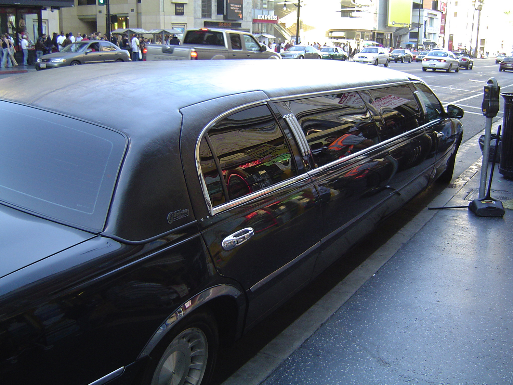

Tolerate Barry's Stories
VII.

"Limo" by Paul Haeder is licensed under CC BY-ND 2.0.
The limo arrives at the Plaza of Millenium Square, and the chauffeur opens the car door for us. "Great talking with you!" Barry shouts. "Big game tomorrow! Wife wants me to pick up arugula for the salad. We're going to need more beer, too! Afterwards, I have to pick-up a client's dog here in two hours. As if this day can't get any crazier. Hey, where'd you go, Rahul?"
Before Barry finishes, we slip out of the T-Rex costume and run through the crowd in shark costumes. Bernard wears the yellow shark suit; I wear the blue shark suit. We arrive at the Animal Cafe, but barely in time for the reservation that we made. Other neighborhood pets and their captors sit in the resturant, eating the entrees. I see a rabbit eating lettuce and carrot soup, and a rottweiler munching on bread and peanut butter. Other animals--including birds--feast. We had phoned the orders with an app before arriving. We just wait for the server to bring our dish. Several kids try to pet us, but their parents pull them away before they touch us with their grubby mitts. Across from us, a family sits with their goldfish in a bowl and hamster in a clear ball. Bernad and I scan the resturant as we're escorted to our seat by the waiter. We wait a minute, and another waiter arrives and lifts a metal lid cover, revealing out appetizers and first course.
"I thought Barry's stories about breaking his diet and playing fantasy sports with his co-workers would never end!" Bernard says.
"Cheers to that!" I say and sip the wine--a white wine for cats. Bernard eats popcorn.
"Do you think we should bring something back to Speedy?" Bernard asks. "Some fruit?"
"Sure. At least, we can say that we didn't leave her with nothing!"
"The costumes work much better than I imagined," Bernard says.
"I know, right?" I reply. "Everyone assumes that our captors are near. Nobody suspects a thing."
After several courses, I notice the waiters talking to each other. Bernard sees it too. The check bounced. My hair stiffens. I see a police park outside. I pause, hear my heart race, and mull over my options.